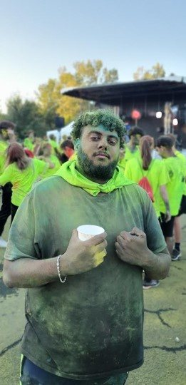
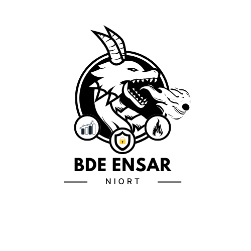
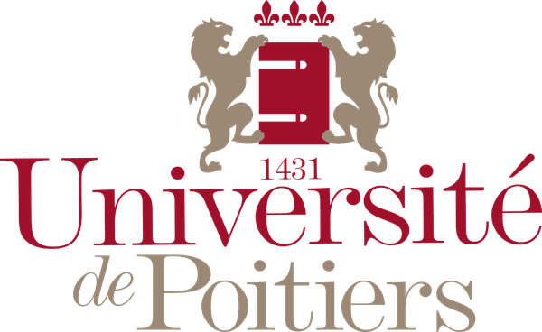
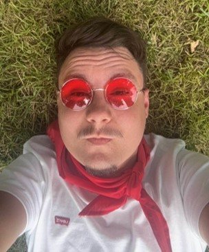
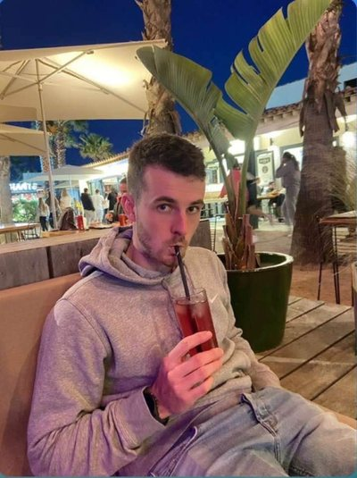
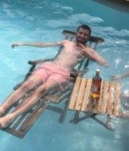
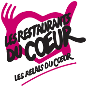
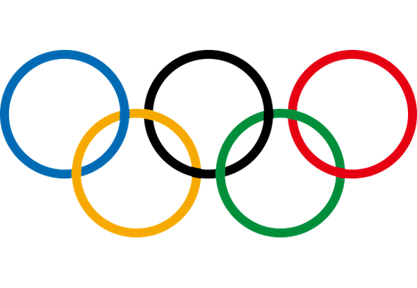
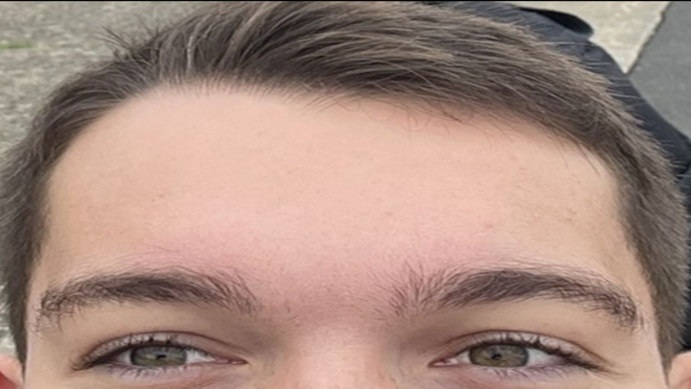

PrésidentAlexis RAMSAHAIM1 SI

BDE ENSARÉDITION 2025 ENSAR · NIORTENSAR – 2025 – PAGE 01 – PRÉSENTATION

ENSAR – 2025 – PAGE 02 – PLAN
ENSAR – 2025 – PAGE 03 – COMPOSITION DU BDE
01Le bureau, puis les pôles communication, sponsors et événements.
ENSAR – 2025 – PAGE 04 – COMPOSITION DU BDE


ENSAR – 2025 – PAGE 05 – COMPOSITION DU BDE


ENSAR – 2025 – PAGE 06 – LES PROJETS
02ENSAR – 2025 – PAGE 07 – RÉALISÉS AVEC L’UNIVERSITÉ
Une journée et une soirée de rentrée avec toutes les associations.
Les formations apprennent à se connaître autour d’activités sportives et culturelles.
Désincarcération, prévention vitesse, alcool et drogues, premiers secours avec l’IFSI.
Une course riche en couleurs.
Un repas chaud tous ensemble avant les vacances.
ENSAR – 2025 – PAGE 08 – RÉALISÉS PAR LE BDE
Des lots à gagner, l’argent récolté est reversé à l’association.
Des jouets offerts aux enfants hospitalisés le jour de Noël.
D’anciens étudiants reviennent sur les matières les plus difficiles.
Participation à l’organisation : communication, accueil…
ENSAR – 2025 – PAGE 09 – RÉALISÉS PAR LE BDE

Collecte d’hygiène, de vêtements et de denrées non périssables.
Course à pied : 1 tour parcouru = 1 € pour l’association PrinSEINSes.
Activités avec des intervenants du handicap, vente de crêpes et de gâteaux.
ENSAR – 2025 – PAGE 10 – LA VIE ÉTUDIANTE
03ENSAR – 2025 – PAGE 11 – LES + DE NOTRE BDE
Un sweat aux couleurs du BDE ENSAR, t-shirt et short pour le sport.
5 € par personne pour profiter des avantages du BDE toute l’année.
Un 2e année parraine un 1re année pour l’aider à s’intégrer.
Un week-end spécial, réservé aux adhérents.
ENSAR – 2025 – PAGE 12 – LE SPORT
Une Olympiade en début d’année pour créer du lien entre les formations.
Un tournoi au moins une fois par mois.
Futsal, football, handball, basket, volley, tennis de table, badminton, babyfoot…

ENSAR – 2025 – PAGE 13 – LES + DE NOTRE BDE
Bowling, patinoire, laser game, karting.
Chocolats à Noël et à Pâques, roses à la Saint-Valentin, muguet en mai.
Les ventes financent une sortie au Futuroscope, voire plus.
Un barbecue entre étudiants.
ENSAR – 2025 – PAGE 14 – LES SOIRÉES
04ENSAR – 2025 – PAGE 15 – LES SOIRÉES
ENSAR – 2025 – PAGE 16 – LES SOIRÉES
